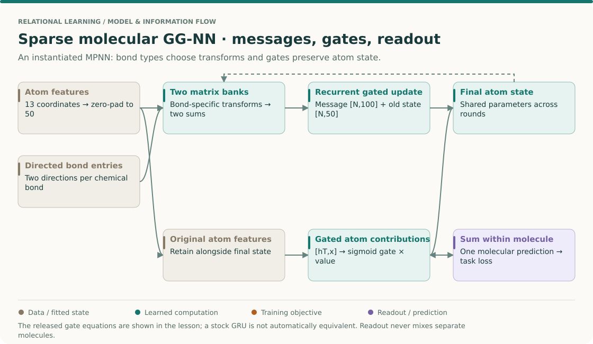
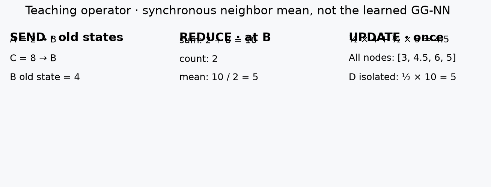
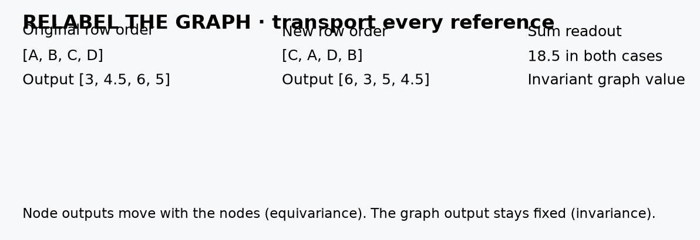
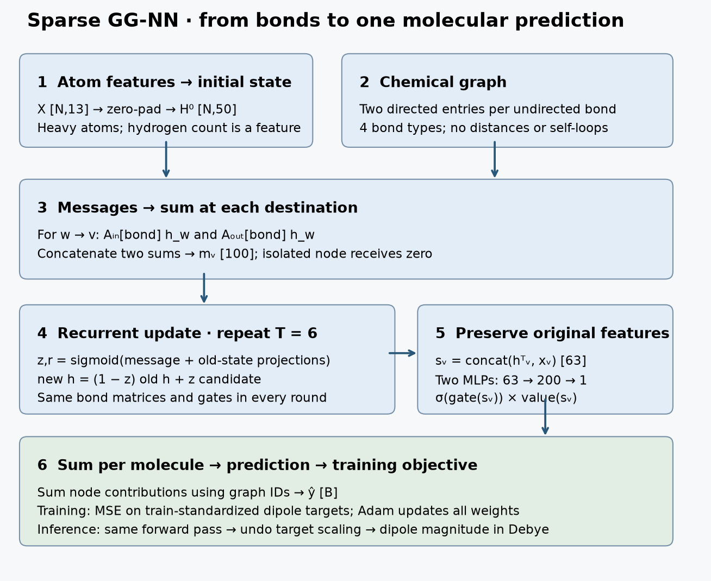

Year 3 · Quarter 1 · Lesson 081
MPNNs: message, aggregate, update, readout
Start cold · what must move when a node is renamed?¶
Close your notes. In the chain A—B—C, can changing C affect A after one synchronous neighbor update? If rows are reordered, what else must be reordered? Why is validation allowed to choose a model while the test set is not? Write answers before continuing.
Your tangible win: implement message → aggregate → update → readout, and show that renaming nodes changes their positions rather than the graph prediction. The core takes about 30 minutes; reserve another session for the molecular model and reproduction audit.
Lesson 78 made one neighbor calculation concrete. Lesson 80 demanded a defensible experiment. Year 3 combines these skills: make graph operations explicit, then test what the resulting model actually learns. This is the foundation for learning over entity relationships in a database.
Primary reading: Gilmer et al., Neural Message Passing for Quantum Chemistry, §2 for the framework and §§6–8 for the experiment. Read the supplement, Table 3, after the core lab.
THE BIG PICTURE · LESSON 081
Build on what you know. Lesson 78 introduced routing and weighted aggregation. Lessons 42 and 46 already separated transformations from their training recipe. Here we use one interface to say exactly where different graph models disagree.
The next question. Lesson 82 fixes the message coefficient using graph degrees. Lesson 84 learns it using attention. Before comparing those models, keep message, aggregation, update and readout as distinct operations.
Open the SSL → relational → graph model map · Work the cold retrieval first, then spend 15–20 minutes tracing this overview before the detailed mechanism and lab.
An MPNN is a set of choices, not one layer¶

Read the framework before the molecular result¶
Read Gilmer et al. §2 and write M, U and R beside the diagram. The displayed molecular GG-NN is one released instantiation, not a definition of every MPNN. The paper's broader experiment space includes different messages, inputs and readouts; the notebook contract names the attempted target.
Follow a molecule through the four operations¶
- Initialize node state. The local sparse molecular model starts from 13 atom features and pads to width 50. Padding creates computational capacity, not new chemical observations. Bond types remain edge information rather than extra atom labels.
- Construct messages. A bond type selects matrices that transform the sender's current state. The released model uses two matrix banks and two sums, concatenated into a 100-coordinate message. The reducer is a sum, so adding a second equal neighbor can change its magnitude.
- Update with gates. For a scalar illustration, old state h=2, candidate c=6, and update gate z=0.25 give h_new=(1−z)h+zc=3. The gate interpolates between old and proposed information. A gate near zero retains the old state; one near one uses the candidate. The real cell performs this coordinatewise with learned gates.
- Repeat with shared recurrent parameters. Reusing parameters over rounds differs from learning a separate matrix at every depth. Both architectures can expand their receptive field, but their parameter counts and optimization behavior differ.
- Read out within each graph. Suppose two atoms contribute gated scalar values 0.2 and 0.5. Their molecular output is 0.7. If another molecule is batched alongside it, its atoms must enter a different sum. The graph-membership vector is as important as the edge tensor.
- Attach the task objective. A molecular target supervises the final graph prediction, and gradients reach the atom updates through the readout. Individual atoms need no independent target label for this end-to-end learning path.
Predict: permuting atom storage order changes the readout?
It should not, provided features, endpoints and graph membership are remapped together. Node states should permute with the atoms; a graph-level sum should stay unchanged. Moving features alone changes the molecule's represented facts and is not a valid equivariance test.
Your intermediate artifact: annotate one bond's message, its destination's update, and its graph's readout. Then explain which operation would need to change to use bond distances or a different graph-level target.
1 · Four operations, one contract¶
In plain terms. A node asks its neighbors for information, combines their replies, and revises its state. A final readout combines node states when the prediction belongs to the whole graph.
State. A node state hᵗᵥ is a vector describing node v after t rounds. Initially it contains or encodes the node's observed features. N nodes with D coordinates form a matrix H of shape [N,D].
Message. For a directed edge w → v, Mₜ(hᵗᵥ, hᵗ𝑤, eᵥ𝑤) constructs the information sent from source w to destination v. The edge feature e can encode a bond type, a transaction amount, or a relation type. Do not swap source and destination merely because an example graph is undirected.
Aggregate. Combine all incoming messages at a destination. The paper's basic definition uses a sum:
mᵗ⁺¹ᵥ = Σ over w in N(v) Mₜ(hᵗᵥ, hᵗ𝑤, eᵥ𝑤)
Sum ignores the order of incoming edges. Mean also ignores order, but divides away neighborhood size. For example, messages [2,2] and [2,2,2] have the same mean; their sums are 4 and 6. Neither reducer identifies every possible multiset: [1,3] and [2,2] have equal sums. The choice encodes what information survives.
Update. Set hᵗ⁺¹ᵥ = Uₜ(hᵗᵥ, mᵗ⁺¹ᵥ). Every message in round t+1 uses the old state Hᵗ. Updating a Python list in place while traversing nodes would let later nodes see newer information and make the result depend on iteration order.
Readout. For a graph target, ŷ = R({hᵀᵥ}). A sum or an invariant learned readout discards arbitrary node order. For a node target, keep one output per node. Pooling all nodes would destroy the distinction between their predictions. These are the message-passing and readout phases of Gilmer §2.
2 · Trace the operation before coding it¶
Worked example. Use A—B—C plus isolated node D. Start with [2,4,8,10]. Send the old scalar state along each direction of each bond. Take the mean of incoming messages, then average it with the destination's old state. Define an empty neighborhood's aggregate as zero.

At B, incoming messages are 2 and 8. Their mean is 5, so B becomes ½×4 + ½×5 = 4.5. D receives zero and becomes 5. This is an explicit empty-neighborhood convention, not a universal GNN rule; a residual-only update could instead preserve D.
Change C to 20. B should become 7.5; A should remain 3 after one round. Then inspect two rounds:
Information can traverse at most one edge per local synchronous round. Global virtual nodes or all-pairs edges change that graph-distance statement. The learned molecular model below uses different messages and updates; this arithmetic example isolates routing.
Implementation contract. edge_index[0] contains sources and edge_index[1] destinations. messages[E,D] is reduced into incoming[N,D]. index_add_ adds rows at destination indices, including repeated destinations. Here duplicate edges count as repeated messages; deduplicate upstream if your graph is intended to be simple.
src, dst = edge_index
messages = message(h[dst], h[src], edge_attr)
incoming = aggregate(messages, dst, len(h), reduction="sum")
h_next = update(h, incoming)
In the notebook, implement the reducer, the synchronous mean update, and the graph readout. The checks include empty edges and node relabeling, so hard-coding this four-node answer cannot pass.
3 · Equivariance inside, invariance at the end¶
In plain terms. If C becomes row zero, its output must become row zero too. The whole molecule has not changed, so its predicted property should stay the same.
Permutation equivariance means that relabeling the input nodes relabels the node outputs in the same way. Permutation invariance means that the graph output is unchanged. A shared message function, a symmetric reducer, and a shared update preserve equivariance. An invariant readout then produces an invariant graph prediction.

Worked example. Store rows as [C,A,D,B] instead of [A,B,C,D]. The correct output becomes [6,3,5,4.5]. Its sum remains 18.5. Moving feature rows without remapping edge endpoints changes the actual graph and is not a symmetry test.
permutation = torch.tensor([2, 0, 3, 1]) # new rows contain these old rows
inverse = torch.argsort(permutation) # old index -> new index
x_new = x[permutation]
edges_new = inverse[edge_index]
# Also carry graph IDs with their nodes: batch_new = batch[permutation]
Break it deliberately. Remap the features but leave the edges fixed. Predict which check will fail. Then restore the endpoints, permute only edge order, and verify agreement within floating-point tolerance. Floating-point sums need not be bit-identical under a different addition order.
4 · GCN and GAT fit the same structure¶
The framework is a way to separate decisions, not a single architecture. The MPNN supplement §1.1 explicitly derives GCN as a special case. GAT arrived later; mapping it here is a retrospective application of the framework.
| Variant | Message from w to v | Aggregate | Update / output |
|---|---|---|---|
| Teaching mean | h𝑤 | incoming mean | ½hᵥ + ½mᵥ |
| GCN | (W h𝑤)/√(d̃ᵥd̃𝑤) | incoming sum, self-loops included | activation(mᵥ) |
| One-head GAT | αᵥ𝑤 W h𝑤 | incoming sum, self-loops included | activation(mᵥ) |
| Sparse GG-NN | two bond-specific matrix products | two sums, concatenated | recurrent gated update |
For GCN, d̃ counts neighbors after adding a self-loop exactly once. This is not generally an ordinary mean. In our chain with a self-loop, B receives 2/√6 + 4/3 + 8/√6 = 5.415816 when W=1. The ordinary self-inclusive mean is 14/3 = 4.666667. Kipf & Welling.
For GAT, α is a learned attention weight normalized over the destination's neighborhood. Scores are computed per edge, but the softmax denominator depends on all incoming edges for that destination. This requires an additional neighborhood reduction before the weighted-message sum. It is not a function of one isolated edge alone. A multi-head layer repeats this operation and combines heads. Veličković et al..
CHECK your mapping. Identify the reducer and self-loop convention before calling a layer “GCN.” Identify the softmax group before calling it “GAT.” The notebook instantiates the generic interface and checks a GCN layer against a dense normalized adjacency calculation.
5 · Model architecture · the sparse molecular GG-NN¶
In plain terms. A double bond can transform its neighbor's state differently from a single bond. Gates decide how much of the old atom state to retain. Finally, each atom contributes to one molecular prediction.

Inputs. Each molecule is a graph of heavy atoms. Hydrogen count is a feature; hydrogens are not separate nodes in this reconstruction. Each atom has 13 features: five atom-type indicators, atomic number, acceptor and donor flags, aromaticity, three hybridization indicators, and hydrogen count. Each chemical bond becomes two directed edges. Bond labels are single, double, triple, or aromatic. There are no distances, self-loops, or nonbonded edges in this lane. The paper explores other input choices; see §6 and Table 1.
Initialization. Pad the 13 observed coordinates with zeros to width 50. No pretrained checkpoint is loaded. Each run trains from initialized weights.
Messages. The released GGNNMsgPass has separate incoming and outgoing matrix banks. A bond selects a 50×50 matrix in each bank. Each bank transforms the source state; two destination sums are concatenated into a 100-dimensional message. On this undirected molecular graph both banks see the same neighbors, but learn different transformations. On a directed graph the outgoing branch would require reversed routing; this molecular class is not a generic directed implementation.
Update. A sigmoid maps each gate coordinate into [0,1]. The reset gate filters the old state before candidate construction. The update gate interpolates between the old and candidate states:
z = sigmoid(m Wz + h Uz)
r = sigmoid(m Wr + h Ur)
candidate = tanh(m W + (r ⊙ h) U)
h_new = (1 − z) ⊙ h + z ⊙ candidate
The source has no gate biases. We implement these equations directly: PyTorch's standard GRU cell uses a different reset placement in its candidate calculation. The same message and update weights are reused for six rounds in the smoke recipe. In the search, the number of rounds varies from three through eight.
Readout. Concatenate each final state with its original 13 features. Feed this 63-dimensional vector into two separate 63→200→1 networks with ReLU hidden activations. Multiply a sigmoid gate from one by the unrestricted scalar value from the other. Sum those contributions within each molecule, not across the batch. Original features remain available even after repeated updates.
Training and inference. Standardize the dipole targets using only training molecules. Minimize mean squared error in standardized units using Adam. Validation MAE chooses the checkpoint and trial. At inference undo target scaling; report mean absolute error in Debye, a unit of dipole moment. Loss uses training targets only. No training dropout is used. All model weights are trainable; the graph structure and atom features remain fixed.
Scope check. This is the sparse GG-NN variant, not the paper's strongest edge-network + set2set model. The framework is shared, but messages, readout, and input information differ. The notebook exposes every forward-pass component and the entire reconstruction trainer.
6 · A named result and a reproducible attempt¶
The target is Supplementary Table 3, GG-NN, μ. Its reported error ratio is 3.94. The supplement gives a chemical-accuracy denominator of 0.1 Debye, so the corresponding MAE is 3.94 × 0.1 = 0.394 Debye. That row is a sparse-graph baseline without spatial distances, not the best headline result.
The authors' release README supplies model definitions but no data reader or trainer. It says paper results used separate 50-trial searches. Therefore “run the defaults” cannot recover the historical experiment.
| Component | Published / released | This package |
|---|---|---|
| Data | 130,462 molecules in the paper | Modern QM9 archive, public exclusions, sanitization failures logged |
| Split | 10,000 validation; 10,000 test; remainder train | Fresh seeded molecule IDs saved explicitly; historical membership unavailable |
| Model | Sparse bond matrices, GRU, gated graph output | Complete visible reconstruction; NumPy equations and dense message checks |
| Objective | Standardized-target MSE, evaluate MAE | Train-only scaling, native-unit MAE |
| Search | 50 trials per model/target | paper-budget: 50 trials, fixed width 50; unreleased winning configurations remain a gap |
| Training | Batch 20, up to 3 million updates, Adam, linear LR decay | Same declared cap/schedule ranges in paper-budget; explicit modern optimizer/init and validation cadence |
| Selection | Validation early stopping and model selection | Best validation checkpoint under fixed cap; no patience-based termination |
| Evidence | 0.394 Debye for the named row | Smoke measurements below; full historical reproduction NOT_RUN |
Author-reference smoke evidence; not student output or paper-result reproduction.
| Split + initialization seed | Test MAE (Debye) | Updates | Status |
|---|---|---|---|
| 81 | 1.038806 | 40 | INCOMPARABLE |
| 82 | 1.115341 | 40 | INCOMPARABLE |
| 83 | 1.112676 | 40 | INCOMPARABLE |
Across these three smoke splits/runs: mean 1.088941, sample SD 0.043439 Debye. This is descriptive run variability, not dataset-level uncertainty.
The smoke uses the first 512 valid molecules in file order, then seeded splits. That cap is convenient for execution checks and is not representative sampling. Its three runs change both split and initialization seeds. Their spread is not a confidence interval for performance over datasets. Do not infer that this model beats a flat-table baseline: no such comparison was run.
Reproduce from the repository root:
python labs/_verify_l081.py
python labs/_run_l081.py --preset smoke --seed 81 --output /tmp/l081-new-smoke
python labs/_run_l081.py --preset closer --device cuda --output /tmp/l081-closer
# Full search/update budget; still a reconstruction with documented source gaps:
python labs/_run_l081.py --preset paper-budget --device cuda --output /tmp/l081-paper-budget
Use the pinned environment and protocol. A run saves molecule IDs, trial configurations, validation histories, a selected checkpoint, test predictions, input hashes, and software versions. The code opens the test evaluation only after choosing the winning trial. Existing completed output directories are rejected.
Scope check. Smoke execution is verified local evidence. The closer and paper-budget searches are NOT_RUN. Missing historical split/search/data-preparation details mean every reconstruction score remains INCOMPARABLE to the published row, even if numerically close. The independent equation tests do not establish full TensorFlow runtime or training parity.
7 · Lab and exit ticket¶
Open the student notebook · Read the prepared lab · Quick reference.
- Implement aggregation, synchronous mean update, and graph readout. Pass the routing and symmetry checks using your live functions.
- Instantiate the generic interface; recover the hand trace. Instantiate GCN with normalized weights and compare with a dense operator. Explain why GAT needs destination-wise softmax.
- Read and execute the full sparse GG-NN. Trace a forward pass and a backward pass; verify that your reducer is called by the model.
- Submit the JSON exit artifact with the trace, relabeling error, graph outputs, and an interpretation of the source gaps. For a QM9 run, attach the run's split IDs, configurations, predictions and result ledger.
Teach back: explain why order-independent aggregation is necessary but does not by itself guarantee an order-independent graph prediction. Then explain why a scalar near 0.394 is insufficient proof of reproduction.
Tomorrow, reconstruct the four operations from memory before opening the reference. After a week, rerun the relabeling test on a different graph with an isolated node. Next, lesson 82 studies GCN's normalization and node-classification protocol in detail. Ask the agent follow-up questions or paste your exit artifact for feedback; authoring this lesson does not mark your mastery complete.